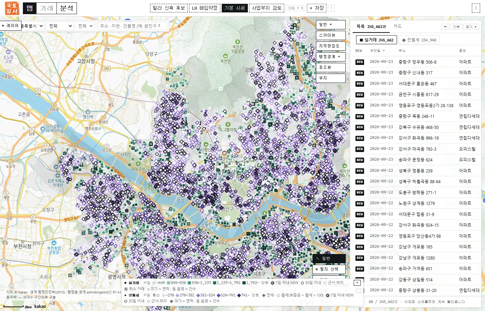
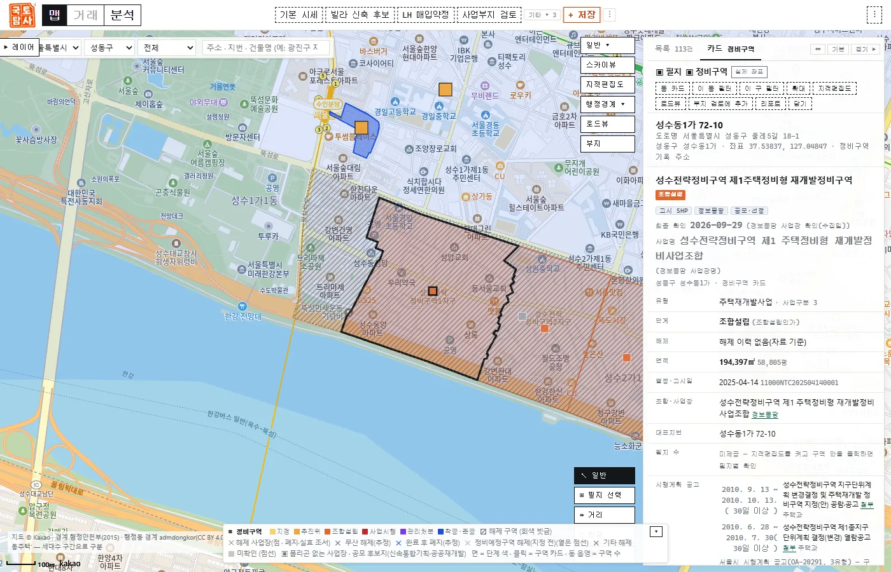

About
창의를 나누고, 함께 성장합니다
와이드플러스는 다양한 사람이 자유롭게 함께 만들고 그 성과를 나눌 때 더 많은 사람이 혜택을 누린다고 믿는 회사입니다. AI를 활용해 적은 인원으로 여러 프로젝트를 꾸려 가는 방식을 만들고 있고, 그중 가장 먼저 키우는 일이 부동산 데이터 서비스(프롭테크) 국토탐사맵입니다.
장기적으로는 DAO(구성원이 함께 운영하는 방식)처럼 누구나 참여하는 프로젝트도 구상하고 있습니다.
Why
정보가 열리면, 땅은 더 잘 쓰입니다
같은 땅을 두고도 아는 만큼 기회가 갈립니다. 우리는 부동산 정보를 투명하게 열고, 제대로 분석해, 좁은 국토를 더 효율적으로 쓰는 길을 찾습니다.
Product
국토탐사맵by wideplus
직접 보고 겪어야 아는 부동산을, 지도 위의 데이터로 미리 경험합니다.
흩어진 공공 자료를 한 지도에
실거래·인허가·정비구역부터 상권·노후도까지 겹쳐 봅니다.
지번 하나로 사업성까지
지을 수 있는 규모와 수지를 근거와 함께 계산합니다.
업계가 함께 쓰는 도구
중개·개발·컨설팅이 이 위에서 더 나은 서비스를 만듭니다.
BETA · 준비 중 — 지금은 내부 베타이며, 공개 서비스는 준비 중입니다
Next
다음 제품: 숙박업소와 여행사를 잇는 객실 거래
모텔·호텔 같은 숙박 사업자의 빈 객실을 여행사의 단체 손님과 연결하는 B2B 서비스(여행사 대상 온라인 객실 판매)를 준비하고 있습니다. 현재는 시장 조사와 기획 단계입니다.
How it works
자료에서 검토까지, 세 단계
지번 하나를 넣으면 공공 자료를 모으고, 법규로 계산하고, 근거를 붙여 돌려줍니다.
공공 자료를 공식 경로로
국토교통부 실거래·전월세, 서울 열린데이터광장의 건축 인허가·정비구역·도시계획, 건축물대장, 필지 경계를 모읍니다. 화면의 숫자마다 출처와 기준일을 붙이는 것이 원칙입니다.
서울 필지 1,813,858 · 건축물 585,731법규를 계산으로
건축법·주차장법·서울시 조례를 옮긴 규모검토 엔진이 층수·세대수·주차·연면적을 개략 산출합니다. 요율·가정 값은 코드와 분리된 표 파일로 두어 근거를 보이게 합니다.
엔진은 개발 중실제 도면과 원문으로 검토
엔진 결과를 실제 허가 도면과 건별로 나란히 놓아 차이를 살피고, 법규는 조문·공개 회신 원문과 대조합니다. 틀린 곳은 기록하고 고칩니다.
실제 허가 도면과 건별 대조Features
지금 되는 것 셋
아래는 내부 베타 기준입니다. 지도에 자료를 겹쳐 보고, 필지를 눌러 카드로 확인하고, 부지 검토로 이어 갑니다.
- 공공 자료 한 지도에건축 인허가 · 실거래 · 전월세 · 정비구역(단계 색, 해제 구역) · 도시계획 · 상권 · 노후도를 겹쳐 봅니다내부 베타
- 노후도 지도서울 필지 약 181만 개를 미리 만든 타일로 빠르게 표시내부 베타
- 필지 카드인허가 · 반경 실거래 · 용도지역 · 노후도 · 정비구역 여부 · 공시지가 · 토지이음 링크 · CSV내부 베타
그 밖의 기능과 준비 중인 것
- 동 카드 · 통계·리포트연도별·월별·자치구·법정동 통계를 표와 CSV 묶음으로내부 베타
- 부지 검토지번 목록 붙여넣기 → 경계 → 조사 → 합필 → 사업성 → 리포트내부 베타
- 목적별 저장된 보기빌라 신축 후보 · 기본 시세 · 토지 매입 조사 등 자주 쓰는 조건을 저장내부 베타
- 유사 사례 · 요건 판정같은 용도·반경·기간 조건으로 비교 사례를 고르고, 정비 요건 충족 여부를 표로내부 베타
- 빌라 규모검토 엔진법규 기반으로 층수·세대수·주차·연면적을 개략 산출하고, 실제 허가 도면과 건별로 비교하는 시험 체계개발 중
- 사업성 검토규모검토 → 가정 → 수입 → 토지비 → 공사비 → 간접비·금융 → 세금·결과. 숫자마다 출처·기준일·확신을 붙이는 것이 원칙개발 중
- 재개발 분석 최소판정비 단계, 소요 기간 분포, 분담금 감 가정준비 중
- 전국 확장 · 콘텐츠 자동화서울 이후 지역 확대와 데이터 소식 자동 발행계획
Technology
안은 촘촘하게, 겉은 간결하게
공식 경로로 모은 공공 데이터, 건축 법규를 담은 규모검토 엔진, 원문 대조로 지키는 정확도.


개발 중 화면 · 지도 © Kakao · 실거래 국토교통부 · 정비구역 서울시
Numbers
숫자로 보는 지금
내부 기록 기준 · 필지·건축물대장은 2026-09-30판, 레이어 수는 2026-10-13 확인, 실거래는 2026-09 기준
How we work
Claude 로 일합니다: 코드를 쓰지 않는 대표와 AI 팀
와이드플러스는 대표가 코드를 직접 쓰지 않고, 프로젝트마다 Claude(Anthropic 의 AI)와 역할이 나뉜 AI 팀원들과 일하는 회사입니다. 국토탐사맵은 그렇게 2026-09-06부터 Claude Code 로 만들고 있습니다. 대표는 무엇을 만들지 정하고 결과를 승인합니다. 이 방식은 이후 프로젝트에도 그대로 가져갈 수 있도록 틀로 만들고 있습니다.
How we build
- 역할 분담프로젝트마다 대표와 대화하며 계획을 세우는 AI 담당자가 한 명 있고, 조사·구현·검수·기록은 각각 맡은 AI 팀원이 합니다. 담당자는 직접 코딩하지 않습니다.
- 모델 등급 분담설계·검토처럼 어려운 판단에는 상위 Claude 모델을, 구현·조사에는 중간 모델을, 기록에는 가벼운 모델을 씁니다.
- 사람이 승인무엇이든 계획을 먼저 보이고 대표가 승인한 뒤 실행합니다. 돈 쓰기·삭제·게시·발송은 대표의 별도 허락이 있어야 합니다.
- 기록상황·결정·이력 세 파일에 시각과 함께 남깁니다. 기록에 없는 결정은 없는 것으로 봅니다.
- 로컬 AI 함께 쓰기회사 PC 의 로컬 AI(오픈 모델)가 1차 정리와 분류를 맡고, Claude 가 확인과 결론을 맡습니다. 비용을 줄이고 자료를 PC 안에 두기 위한 역할 나누기입니다.
- 꾸준히 배우기AI 전담 팀이 정해진 주기로 공식 문서와 변경 기록을 조사해, 우리 일에 적용할 만한 것을 후보로 정리합니다.
How we verify
- 실제 도면 대조엔진이 낸 층별 면적·세대수·주차대수를 실제 허가 도면과 건별로 나란히 놓고 차이를 살핍니다. 일부 도면은 엔진 조정에 쓰지 않고 따로 두어, 맞춰 놓은 답이 아닌지 시험합니다.
- 법규 원문 대조법제처 조문과 국토교통부 공개 회신을 직접 열어 엔진의 값과 대조합니다. 한 번의 대조에서도 서울시 조례의 호 번호 등 정정할 곳을 찾아냈습니다.
- 독립 검수판단을 가르는 사실은 처음 쓴 팀원이 아닌 다른 팀원이 원문으로 다시 확인합니다. 검수 팀원은 작성자의 중간 계산을 쓰지 않고 원본 파일에서 숫자를 다시 내며, 설명이 사실과 다른 곳을 짚어냅니다.
- 되돌릴 수 있게엔진을 바꿀 때는 통째 백업을 먼저 만들고, 바꾼 뒤 기존 시험 도면에서 같은 결과가 재현되는지, 원래대로 복원되는지 확인합니다. 틀린 일은 숨기지 않고 기록하며, 같은 일이 반복되지 않도록 장치로 막습니다.
개발 중입니다. 규모검토 엔진과 사업성 검토는 시제품 단계입니다. 화면의 결과는 검토 참고용이며, 완성된 수치가 아닙니다.
Founder
김영권 대표
부동산 개발 컨설팅 · 빌라 신축 · 정비사업 사업성 실무. 코드 대신 AI 팀과 함께 국토탐사맵을 직접 만듭니다.
Services
컨설팅 현장에서 얻은 감각은 국토탐사맵을 다듬는 데 쓰이고, 국토탐사맵의 자료와 분석은 컨설팅의 근거가 됩니다.
- 부동산 개발 컨설팅땅에서 무엇을, 얼마나 지을지
- 빌라 신축·개발법규·규모 검토부터 수지분석까지
- 정비사업 분석구역의 진행 단계와 사업성
English
Wideplus is a Korean company, founded in 2022, built on one idea: share creativity, grow together. We use AI to run several projects with a small team, and we start with real estate, where information is still unevenly shared. Over the longer term we hope to try DAO-style projects in which anyone can take part. Our first product, Gukto Tamsa Map, brings public property data onto one map, answers feasibility questions from a single lot number, and opens tools the industry can build on. It is led by founder Youngkwon Kim, a real-estate development consultant who builds it with Claude Code and a team of AI agents.
How it works. Data, engine, review. (1) We collect public data through official channels: transaction and rental records from the Ministry of Land, Infrastructure and Transport, and building permits, redevelopment zones and urban-planning layers from Seoul Open Data Plaza, plus building registers and parcel boundaries. (2) A feasibility engine translates building, parking and Seoul ordinance rules into code and estimates floors, units, parking and gross floor area. (3) Results are compared side by side with real building-permit drawings and checked against the legal texts.
What exists today. Gukto Tamsa Map is an internal beta, not yet a public service. Working in the beta: public-data map layers, parcel and district cards, statistics and report export, a site-review flow, and similar-case and eligibility checks. In development: the feasibility engine and a business-feasibility model, both still prototypes. Planned: a minimal redevelopment analysis, nationwide expansion and automated data content. The product screens shown on this page come from the development build.
Next product. We are preparing a B2B service that connects the vacant rooms of lodging operators, such as motels and hotels, with group travelers booked through travel agencies. It is at the market-research and planning stage.
We work with Claude. The founder does not write code. Since 2026-09-06 the product has been built with Claude Code and a team of role-specific AI agents (research, implementation, independent review, record-keeping), using stronger Claude models for design and review and lighter ones for routine work; a local open-source model handles first-pass sorting on a company PC. A human approves every plan before it runs; spending, deletion, publishing and sending always need a separate go-ahead. Verification: engine output is compared with real permit drawings, some of which are held out and never used for tuning; rules are checked against the original legal texts on law.go.kr and public Ministry replies; a separate review agent recomputes key numbers from source files rather than reusing the author’s intermediate results; every engine change is backed up and reproduced on the existing test cases.
Wideplus Co., Ltd. (와이드플러스 주식회사) · Incorporated December 2022 · Business Registration No. 473-88-02918 · 203, 1700 Tongil-ro, Munsan-eup, Paju-si, Gyeonggi-do, Republic of Korea · CEO Youngkwon Kim · contact@wideplus.co.kr
Contact
함께 만들 일을 기다립니다.
contact@wideplus.co.kr